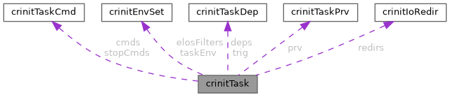

- Generated by
 1.9.8
1.9.8
|
Crinit -- Configurable Rootfs Init
|
#include <task.h>

Data Fields | |
| char * | name |
| Name of the task, corresponds to NAME in the config file. | |
| crinitTaskCmd_t * | cmds |
| Dynamic array of commands, corresponds to COMMAND[N] in the config file. | |
| size_t | cmdsSize |
| Number of commands in cmds array. | |
| crinitTaskCmd_t * | stopCmds |
| Dynamic array of commands, corresponds to STOP_COMMAND[N] in the config file. | |
| size_t | stopCmdsSize |
| Number of commands in stopCmds array. | |
| crinitEnvSet_t | taskEnv |
| Environment variables valid for each COMMAND in this task. | |
| crinitEnvSet_t | elosFilters |
| Elos filter definitions valid for use in dependencies of this task. | |
| crinitTaskDep_t * | deps |
| Dynamic array of dependencies, corresponds to DEPENDS in the config file. | |
| size_t | depsSize |
| Number of dependencies in deps array. | |
| crinitTaskDep_t * | trig |
| Dynamic array of trigger, corresponds to TRIGGER in the config file. | |
| size_t | trigSize |
| Number of trigger in trig array. | |
| bool | triggered |
| Task was triggered (or no trigger where set) and can be run. | |
| crinitTaskPrv_t * | prv |
| Dynamic array of provided features, corresponds to PROVIDES in the config file. | |
| size_t | prvSize |
| Number of provided features in prv array. | |
| crinitTaskOpts_t | opts |
| Task options. | |
| crinitTaskState_t | state |
| Task state. | |
| pid_t | pid |
| PID of currently running process subordinate to the task, if any. | |
| crinitIoRedir_t * | redirs |
| IO redirection descriptions. | |
| size_t | redirsSize |
| Number of IO redirections. | |
| int | maxRetries |
| int | failCount |
| bool | inhibitRespawn |
| If task was stopped via user interaction, do not respawn it. | |
| struct timespec | createTime |
| The time the task was created (i.e. has been loaded and parsed). | |
| struct timespec | startTime |
| The time the task last became 'running'. | |
| struct timespec | endTime |
| The time the task last became 'done' or 'failed. | |
| uid_t | user |
| The user id to run the task's commands with. | |
| gid_t | group |
| The group id to run the task's commands with. | |
| gid_t * | supGroups |
| Dynamic array of supplementary group IDs. | |
| size_t | supGroupsSize |
| Number of supplementary group IDs in supGroups. | |
| char * | username |
| The username to run the task's commands with. | |
| char * | groupname |
| The groupname to run the task's commands with. | |
Type to store a single task.
| crinitTaskCmd_t* crinitTask::cmds |
Dynamic array of commands, corresponds to COMMAND[N] in the config file.
| size_t crinitTask::cmdsSize |
Number of commands in cmds array.
| struct timespec crinitTask::createTime |
The time the task was created (i.e. has been loaded and parsed).
| crinitTaskDep_t* crinitTask::deps |
Dynamic array of dependencies, corresponds to DEPENDS in the config file.
| size_t crinitTask::depsSize |
Number of dependencies in deps array.
| crinitEnvSet_t crinitTask::elosFilters |
Elos filter definitions valid for use in dependencies of this task.
| struct timespec crinitTask::endTime |
The time the task last became 'done' or 'failed.
| int crinitTask::failCount |
Counts consecutive respawns after failure (see crinitTaskOpts_t::maxRetries). Resets on a successful completion (i.e. all COMMANDs in the task have returned 0).
| gid_t crinitTask::group |
The group id to run the task's commands with.
| char* crinitTask::groupname |
The groupname to run the task's commands with.
| bool crinitTask::inhibitRespawn |
If task was stopped via user interaction, do not respawn it.
| int crinitTask::maxRetries |
If crinitTask_t::opts includes CRINIT_TASK_OPT_RESPAWN, this variable specifies a maximum consecutive number of respawns after failure (default: -1 for infinite).
| char* crinitTask::name |
Name of the task, corresponds to NAME in the config file.
| crinitTaskOpts_t crinitTask::opts |
Task options.
| pid_t crinitTask::pid |
PID of currently running process subordinate to the task, if any.
| crinitTaskPrv_t* crinitTask::prv |
Dynamic array of provided features, corresponds to PROVIDES in the config file.
| size_t crinitTask::prvSize |
Number of provided features in prv array.
| crinitIoRedir_t* crinitTask::redirs |
IO redirection descriptions.
| size_t crinitTask::redirsSize |
Number of IO redirections.
| struct timespec crinitTask::startTime |
The time the task last became 'running'.
| crinitTaskState_t crinitTask::state |
Task state.
| crinitTaskCmd_t* crinitTask::stopCmds |
Dynamic array of commands, corresponds to STOP_COMMAND[N] in the config file.
| size_t crinitTask::stopCmdsSize |
Number of commands in stopCmds array.
| gid_t* crinitTask::supGroups |
Dynamic array of supplementary group IDs.
| size_t crinitTask::supGroupsSize |
Number of supplementary group IDs in supGroups.
| crinitEnvSet_t crinitTask::taskEnv |
Environment variables valid for each COMMAND in this task.
| crinitTaskDep_t* crinitTask::trig |
Dynamic array of trigger, corresponds to TRIGGER in the config file.
| bool crinitTask::triggered |
Task was triggered (or no trigger where set) and can be run.
| size_t crinitTask::trigSize |
Number of trigger in trig array.
| uid_t crinitTask::user |
The user id to run the task's commands with.
| char* crinitTask::username |
The username to run the task's commands with.